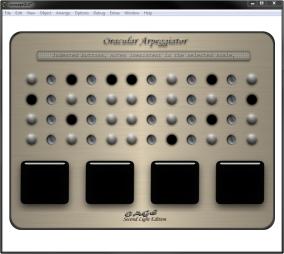

Any swipes that begin near a mid-height of the pad, move to the right and that match any given wave-form will be identified as such.
If a swipe begins and ends close to the low end of the pad and moves to the right it will be identified as an envelope filter, regardless of shape... all possible meaningful envelope shapes can fit these constraints.
Thanks to these considerations, envelopes and wave-forms can be drawn in the same space and direction but they can be accurately differentiated.
Any swipes that move from right to left will be identified as an equalizer filter. Equalizer curves can take all sorts of shapes, some closely resembling those of waveforms or envelopes.
We are culturally predisposed to identify left-to-right movement with the passage of time (probably due to the direction we read in). Since in an Envelope and a Wave-form graph the X-axis represents time, drawing these shapes left-to-right would feel odd.
An equalizer filter, on the other hand, is not time based, the X-axis represents pitch rather than time... therefore right-to-left movement doesn't seem unnatural.
The instrument may have several independent instances sounding simultaneously. Each instance can be understood as composed by two stand-alone elements:
An arpeggiator; acting as the composition engine,
A synth; responsible for sound generation, manipulation, and modulation.
A new instance on the instrument can be activated by placing a tangible block on the surface, we can have as many as we wish of these.
This element defines what notes and how these will be played.

When the tangible element is on the table a menu will be displayed next to it. This menu can be hidden or expanded by means of an active edge to save screen real-estate. On this menu we can see a matrix where columns represent different musical notes and rows represent different octaves. By tapping or swiping over various notes, these can be activated or deactivated and will become part of the loop that the arpeggiator will play (the arpeggio).
The instrument instance will have two available modes: “edit mode” and “live mode”. When a tangible is first placed on the table it will be on edit mode, when it is removed from the table it will switch to live mode. A mark will remain on the space where the pad once was, if any tangible is put back on this mark then the instrument instance will go back to edit mode . If we want to move the instance around the table we can do so either dragging the tangible element or (if the element is off the table and we are in live-mode) we can drag the remaining mark where the tangible was with one finger. If we put the tangible back on the table but on a different spot it will spawn a new instrument instance, without interfering with the old one. If we want to kill the instrument we can swipe the remaining circle with multiple fingers.
We can change the note duration, the beat division, the arpeggiator mode, the scale selection and the transposition(route KEY of the arpeggio) with five additional tangibles that can be laid on the table next to the instance fiducial momentarily and rotated... the values of these changes will be detailed next to the tangibles but won’t be implemented until the tangibles are lifted back off the table. When possible we will display symbols rather than words or numbers since these can be read effortlessly from any direction, however most of the values displayed can’t quite be converted to symbols. In case of the note duration and beat division we’ll see a number, in case of the scale selection we’ll see a scale name, in the case of the arpeggiator mode we’ll see a symbol. These will be displayed on two opposing sides of the tangible object for them to be clearly seen by users standing at different positions. These are variables we do not want to change in a discrete way since the transition through the range of intermediate values would generate unwanted changes and interfere with the musicality of the sound. The scale selection for instance would likely trigger dissonant notes as we slide from one scale to another. The arpeggiator mode is also an unrelated list of options to go through, so the option for a gradual transition would make no sense. The other two (beat division and note duration) would not necessarily be hazardous as gradual transitions, but we think a much more compelling effect is achieved when leaping from one value to another. This rotating and lifting modality of interaction allows a user to pre-set a value for the transition without it affecting the current sound and then evoking the change when he feels the moment is right. Several tangible elements can be lifted at the same time (at least two per user) marking a more interesting and contrasted change in the pattern. The down-side of this way of interacting is that it is less dynamic since the element must be laid down, adjusted and it will only produce a change when lifted, however our intention is to drive the user into changing these variables in a more planned and sequential way, introducing different stages into the music through leaps in them.This may be in a way analogous to when DJs prepare a a second loop on their headphones but don’t trigger it till they feel it’s time to do it.
An additional turning tangible will be available for a different kind of transposition of the arpeggio. This tangible, unlike the others, will start altering the value as soon as it’s turned, rather than just when lifted. In that way it will allow smooth transitions through the entire range of intermediate values. Although this function is already taken care of by a discrete turner as already mentioned, this will allow for a different modality and a completely different way of interacting with the music.
This elementdefines tone, volume, wave-shape, harmonics and filtering of the generated sound. It is controlled on the second screen. Whenever a pad is held over the matrix of an instrument instance it will be assigned to interact with it. There will be only one pad acting on one instance at a time. Because of technological limitations, the pad may not be held OVER the tangible elements since they would be blocking both the camera and projector. If this occurs the user will see the shadow cast on his pad and should move it to avoid it. He might be aided by another more obvious visual queue like having the entire pad turn red when blocked. There will be a visible margin around the matrix to delimit a space where fiducials should not be placed because they’ll interfere with pads. If a pad falls away from the range of the instrument or if it is blocked from sight then the system will assume that the last recorded variables remain constant. Whenever a pad is newly recognized or an instrument enters live-mode the variables assigned to the pad will transition quickly but gradually from the old values to the new values to avoid clicky abrupt transitions. This screen will present different options depending on the mode that has been selected: “live mode”/”edit mode” (and within “edit mode”, depending on the widget that has been selected... more on this later). Having the mode selector on the table rather than on the pad avoids several dilemas such as “what occurs if one same pad is passed from one instance to another? what mode will it now be on? and if it changes mode and then switches back to the old instance?”.
Since it was impractical to fit all of the variables we wished to work with In “edit mode” into one tiny screen without confusing the user there shall be two different widgets we can shift between by swiping on the pad (moving at least 3 fingers together). We will call these two widgets “Modulation Mapping Setup” and “Harmonics layering”. A visual change in the projection over the pad will accompany this transition to provide feedback. On “Modulation Mapping Setup” widget we will be able to assign different variables to the diverse rotation axes of the pad and it’s height when in “live mode”. Depending on the height at which we hold the pad on edit mode we will be seeing the properties of one of the four different available filters: LFO, FM, FM2 and AM. On one of the sides of the pad a map will indicate the relative position of the pad; the format of our map will be inspired in the metro-train maps that indicate the stations in the line and current station with a red light. Each layer will initially display an on/off button, which if turned on will activate the filter and make the controls of the current filter appear. Each of these filters possesses two controllable parameters that on edit mode can be assigned to different degrees of freedom of the pad. This will be achieved by dragging an icon that represents it to the margins of the pad with TWO fingers at a time (to avoid confusion). We can assign variables to roll, pitch, yaw and height of pad. We can also revert these settings by performing the opposite gesture, with two fingers as well. A filter can also be ON but not having any of its controls mapped to any of the DoF of the pad. The filter will be initialized with default values, however if different values are to be selected a static value for the control must be set by tapping on its icon once, rolling the pad, and tapping again to set the value.
The degrees of freedom of the pad are a very interesting way to interact with music since we can act upon several of them in one single movement, altering different values simultaneously in a fluid and organic way. We believe this form of interaction allows for a wide variety of possibilities to explore and we didn’t want to limit the mapping of these parameters to one set of variables... therefore we attempted to make this mapping as customizable as possible. Shifting these icons across the screen comfortably could interfere with the music since it would require to hold the pad in a somewhat horizontal position, which may be mapped to a parameter, therefore it was necessary to have a non-live mode to allow this to be done comfortably.
On the “Harmonics layering” widget we can draw the wave-shapes for the sound generating engine. Depending on the height at which we hold the pad we will be setting the wave-shape for either the main voice or for one of the 8 harmonic voices. These can all be producing different wave-shapes, eg: sine in one and saw in the others.
Again, on the site of the pad a metro-style station map will indicate the relative position of the pad. Once again, drawing these curves comfortably interferes with the orientation of the pad so we chose to set this in edit-mode.
Regardless of the widget, two gestures will be eligible at all times: equalizer and envelope filter. If we swipe any shape from right to left of the pad, this will be interpreted as an equalization of the instrument sound. If we swipe any shape from left to right, as long as the x position of our cursor is near 0 both at the start and end of the curve it will be interpreted as an envelope filter.
We can also perform a wave shape at any given moment, but it will be assigned to different things depending on the widget we’re on and the height at which the pad is held: either a filter wave-shape or a sound generator wave-shape.
These three parameters that are set by drawing (wave shape, envelope and equalizer) are one of the key aspects of the design of this instrument. Drawing shapes with a cursor allows for a great degree of expressivity and complexity through iterating a simple element: the position of the cursor. Using a finger to draw shapes allows for a more control. This also saves screen real-estate by reducing the need for additional buttons. A problem with this, though, is that the rules that differentiate one gesture from another need to be explained, the use of right to left for equalizer for instance may not be intuitively discovered by the user when exploring the interaction. Live mode: Modulation manipulation. Once we’re satisfied with the mapping we’ve defined in the “Modulation Mapping” widget we can tap on the button on the table and enter “live mode”. Here the system will be actively tracking the roll, pitch, yaw and height of the pad and changing the values assigned to the modulation filters that we set on the edit mode.
To set the beat for the entire system we must tap at least four times (at fairly regular intervals and close distance) anywhere on the table.